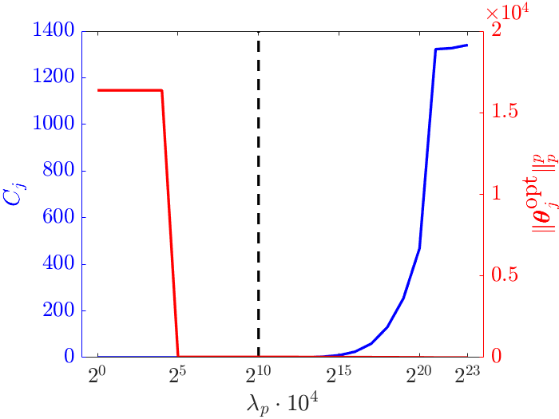

Example 2 - Generalized standard materials
It follows a step-by-step description of the implemented algorithm for an exemplary dataset. In particular, EUCLID (Efficient Unsupervised Constitutive Law Identification & Discovery) is applied to the displacement and net reaction force data that were generated based on the material model LEVP. The goal is to use the data to discover the material model, without knowing its specific mathematical form a priori.
Forward Problem (FEA)
We assume the material model LEVP (for which the material parameters can be found in material/lib_VEVPHardMixLin_LEVPHardKinLin.m) and run the forward finite element simulation (see FEA_rate_dependent_plate_elliptic_holes.m).
The results of the finite element analysis can be found in the ETH Research Collection under 20220907T134236_DATA_lib_VEVPHardMixLin_LEVPHardKinLin_plate_elliptic_holes_noise_1.mat.
Inverse Problem (EUCLID)
Data and Parameters
The input data for EUCLID and the parameters for the optimization process are defined in opt_input_RateDependent.m.
First, it is defined whether a Matlab executable file (.mex file) should be used to accelerate the objective function evaluation (see Matlab Coder and MEX File Functions)
and over how many Matlab workers the independent optimization processes should be distributed (see Parallel Computing Toolbox and parfor).
in.use_mex = true;
in.n_workers = 24;
To consider the data corresponding to material model LEVP, the variable dataID has to be set to four.
dataID = 4;
To also consider noise and temporal denoising, we set:
in.noise_level = '1';
in.filter = 'sgolay';
in.filter_length = 10;
According to these choices the following string is assigned to the variable in.datafile:
'20220907T134236_DATA_lib_VEVPHardMixLin_LEVPHardKinLin_plate_elliptic_holes_noise_1_sgolay_10'
The string contains a timestamp that indicates when the data were generated and contains information about the material model, the geometry, the noise level and the smoothing method, respectively.
To load the .mat datafile with the above name, a path has to be added by changing the variable pathname in opt_input_RateDependent.m accordingly.
The .mat datafile contains a struct array called data with all information provided by the finite element simulation,
such as for example the nodal displacements in data.results.u and net reaction forces in data.results.reaction (see animation below).

Animation 1: Magnitude of displacement obtained from finite element simulations magnified by a factor of 5 (left). Displacement (center) and reaction force (right) at the boundary.
In opt_input_RateDependent.m, we further define parameters and hyperparameters for the optimization problem.
All input information needed for the optimization problem are stored in a struct array called in.
Optimization
After defining the elementary inputs in opt_input_RateDependent.m, we start the optimization procedure by running opt_RateDependent.m.
The optimization procedure is similar to the one described in the example for elastoplasticity.
Note that for decreasing the computational time needed for the cost function evalution, the function objective_vec_VEVPHardMixLin_v2.m is converted into a Matlab executable file (.mex file).
Model Selection
As a final postprocessing step, a model with both high parsimony and low cost function value needs to be selected from the generated set of solutions.
To this end, selection_RateDependent.m is executed.
Here, the hyperparameters for the model selection are chosen as:
threshold_factor_cost = 1.1;
min_cost_threshold = 1e-5;
As solutions were generated based on multiple initial guesses,
we choose for every choice of lambda_p the initial guess that corresponds to the lowest objective function value, resulting in one solution for every choice of lambda_p.
Afterwards, solutions with cost function values above a threshold are discarded as they are expected to provide low fitting accuracies.
From the remaining solutions, the solution with the highest sparsity, i.e., with the lowest regularization term, is selected.
Lastly, material parameters below a threshold are discarded.

Figure 1: Pareto analysis for selecting lambda_p.
The final solution is:
>> selection_RateDependent('202209T07215606_RESULTS_lsqnonlin_VEVP_par_perturbation_lib_VEVPHardMixLin_LEVPHardKinLin_plate_elliptic_holes_noise_1_sgolay_10');
True parameters:
G0 = 0.6
K0 = 1.3
G1 = 0
1 / g1 = 1000000
K1 = 0
1 / k1 = 1000000
H_iso = 0
H_kin = 0.01
eta = 0.04
1 / sigma_0 = 33.3333
Automatically selected parameters:
G0 = 0.6013
K0 = 1.2997
G1 = 0
1 / g1 = 0
K1 = 0
1 / k1 = 0
H_iso = 0
H_kin = 0.009857
eta = 0.035974
1 / sigma_0 = 33.0194
The algorithm correctly identifies which features have to be active to describe the material behavior and at the same time correctly removes irrelevant features. The correct mathematical form of the material model LEVP is identified, however, the material parameter values vary slightly compared to the true parameters as a consequence of the noise added to the displacement data.